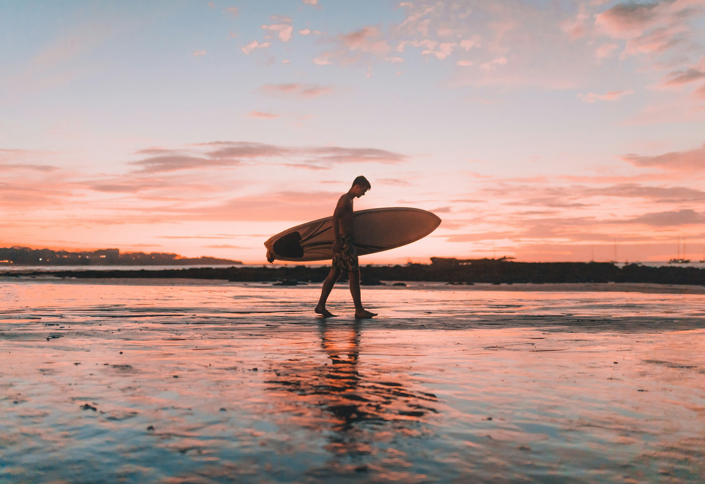
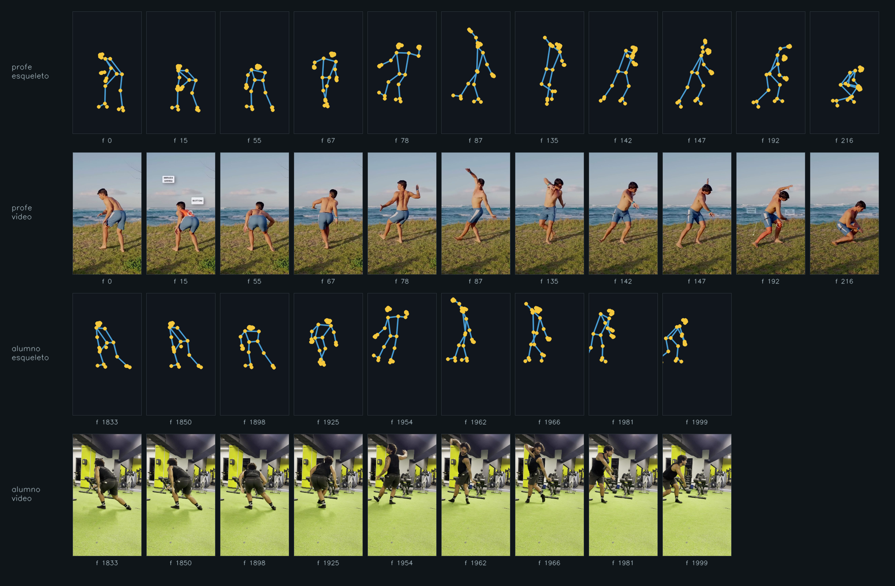

Etapa por etapa
el movimiento completo en poses clave

Compresión, estabilidad, rotación de hombros, alineación y distribución de peso de tus estudiantes — etapa por etapa, sobre su propio video, comparados contra tu técnica.
Cadera, hombros, mirada de la cabeza, inclinación de los cuerpos y distribución del peso — en cada etapa del movimiento, con el esqueleto al lado del video. Lo poco perceptible, visible y comentado sobre el frame.

No inventamos métricas nuevas: hacemos visibles las que ya usas.
Cuánto se pliega el cuerpo — rodilla y cadera juntas — en el bottom y en cada fase del giro.
El peso sobre la base de apoyo y el apilado del cuerpo: quién está sobre la tabla y quién se cae de ella.
La separación hombros-caderas en el giro: cuánta rotación genera de verdad y cuándo la suelta.
Líneas de hombros y cadera e inclinación de los cuerpos, comparadas etapa por etapa contra la referencia.
Los rangos que el alumno alcanza dentro del gesto — y dónde se queda corto respecto a ti.
Cómo conecta una pose clave con la siguiente: la secuencia delata los saltos y las pausas que el video a velocidad real esconde.
Hacia dónde va la cabeza en cada etapa — la corrección más barata y la que más cuesta ver en vivo.
Esto es un carve real convertido en vectores de movimiento — el mismo que ves arriba en la secuencia. Sin fondo, sin ropa, sin distracción: solo la mecánica del cuerpo.
Así se compara al alumno contra el coach: cuerpo contra cuerpo, etapa contra etapa, también en 3D para girarlo y verlo desde cualquier ángulo.

Pop-up, carving, cutback: el gesto se entrena en tierra, repetible y filmable, sin esperar condiciones.

KineSurf extrae la pose frame a frame. Tú corriges cualquier punto que el video oculte.

Tus propios videos son el patrón: cada alumno se compara contra tu librería de referencias por maniobra.


No le digas que le falta compresión.
Muéstrasela.
Un celular en trípode, plano lateral. El alumno entrena la maniobra en tierra — repetible, sin esperar olas.
Extrae la pose frame a frame y arma la secuencia de poses clave junto a tu referencia.
Marcas la etapa exacta donde se rompe la técnica y le envías la infografía comentada al alumno.
Trabajo directamente con cada coach: montamos tu librería de referencias, tus maniobras y tus estudiantes, y te acompaño hasta que la herramienta sea parte de tu método.
Agenda una demo